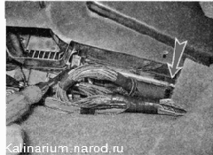
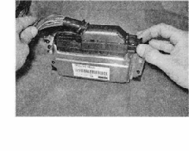
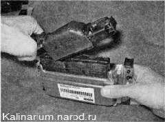

Электронный блок управления (ЭБУ) снятие и установкаСнятие 1. Подготавливаем автомобиль к выполнению работы и отсоединяем клемму проводов от отрицательного вывода аккумуляторной батареи. 2. Снимаем правую накладку консоли панели приборов. 3. Крестовой отверткой отворачиваем два самореза крепления кронштейна ЭБУ к корпусу отопителя. 4. Выдвигая по направляющим, извлекаем ЭБУ из-под отопителя вместе с кронштейном. 5. Выдвигая, выводим фиксатор колодки из зацепления с блоком.  Не касайтесь выводов ЭБУ руками! Система управления двигателем микропроцессорная, электронные компоненты ЭБУ могут быть повреждены электростатическим разрядом. 6. Отсоединяем колодку жгута проводов от ЭБУ. 7. При необходимости отвернув два самореза, снимаем с ЭБУ два кронштейна. Установка Устанавливаем электронный блок в обратной последовательности. |